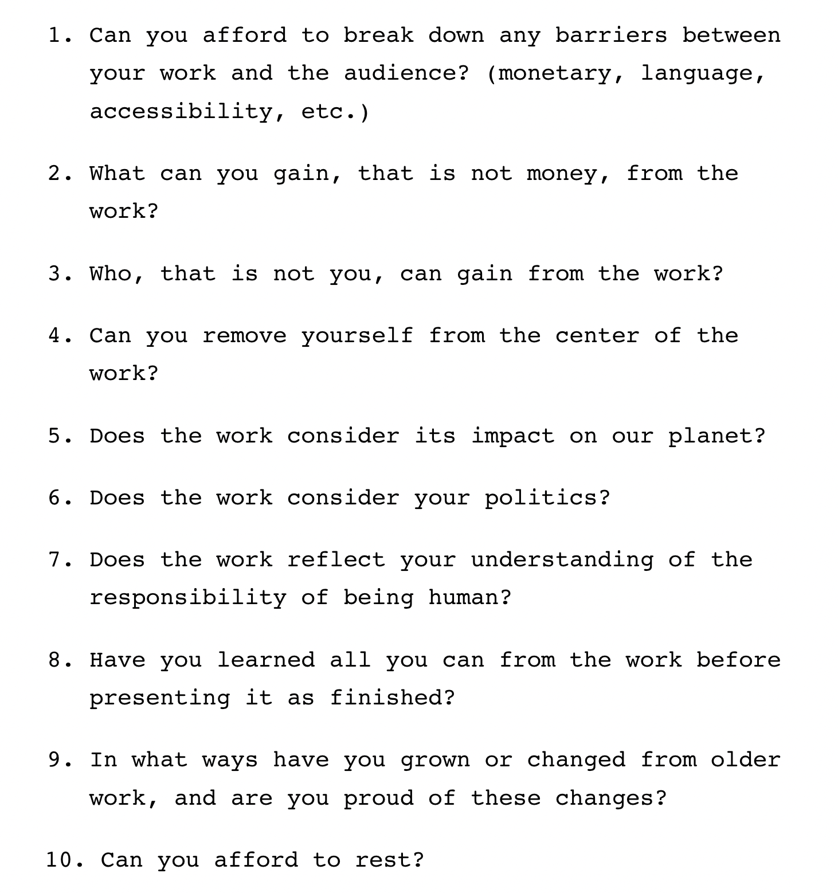

A manifesto is a written declaration of the intentions,motives, or views of the issuer, be it an individual, group, political party, or government.
Manifestos usually promote new ideas with prescriptive notions for carrying out changes the author believes should be made.
In the 1960s, artist, educator, and social justice advocate Corita Kent asked her students to collectively reimagine what a learning environment could be. Their contributions comprised the now widely recognizable Immaculate Heart College Art Department Rules (commonly referred to as “Ten Rules”).
These principles act as a soft manifesto for myself, and for anyone else who wants to be an artist practicing for softer reasons at softer paces in softer spaces:
https://beyondresolution.info/ABOUT https://www.are.na/leona-__/manifestos-bkjrdyknvvg https://thecreativeindependent.com/essays/a-soft-manifesto/